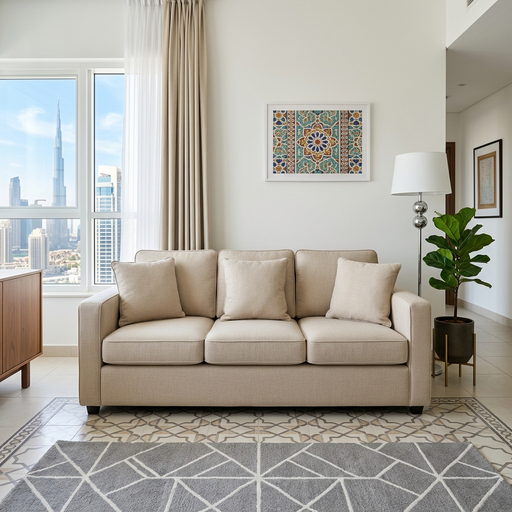
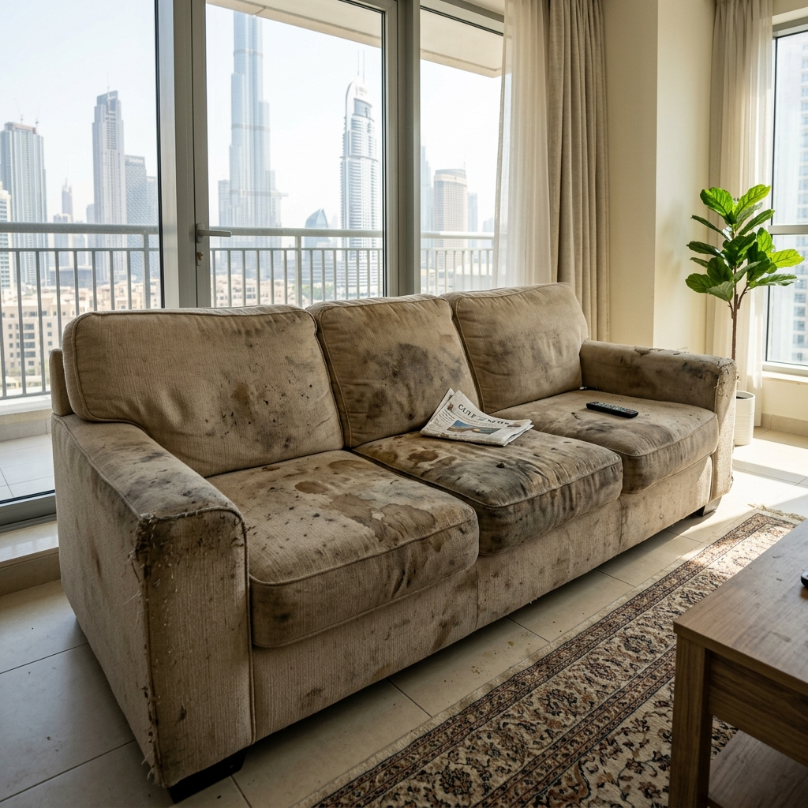

Residential · Upholstery
Sofa & upholstery cleaning
We don't surface-spray your sofa and hope. Hot-water extraction and steam pull the embedded dust, body oils, food residue and dust mites out of the fabric — leaving it fresher, lighter and genuinely clean.


Drag to compare. (Real photos arriving soon.)
What's included
A proper deep clean — not a quick brush.
- Inspection & fabric/colour-fastness test
- High-power vacuuming, including under cushions
- Pre-treatment of stains & high-traffic areas
- Hot-water extraction / steam deep clean
- Arms, back, sides, base & both sides of cushions
- Deodorising & optional fabric protector
- Leather pieces: gentle clean + conditioning
- Also: armchairs, mattresses, dining chairs, headboards, ottomans
How it works
Three steps, on site.
Inspect & prep
We check the fabric type, test for colour-fastness, vacuum thoroughly and pre-treat stains and soiled zones.
Extract & steam
Hot solution is worked into the fabric and immediately extracted — dirt, residue and most stains come out with it.
Finish & dry
Deodorise, optional protector, groom the pile, and set up airflow so it dries fast — usually touch-dry in a few hours.
Pricing
Clear prices, no surprises.
Indicative starting prices — final quote depends on size, material and condition. Bundle with carpets or curtains and we'll bring it down.
Single seats
from AED 35 / seat
Armchairs, dining chairs, single sofa seats — priced per seat.
Sofa sets
from AED 150 / set
3+2, L-shapes and larger lounges — full set deep clean. Most popular.
Mattresses
from AED 60 / mattress
Single to king — sanitised, deodorised and dust-mite treated, both sides.
FAQ
Sofa cleaning, answered.
"Three-seater and two armchairs that hadn't been cleaned in years — they look and smell brand new. The team was tidy, on time and finished in about two hours."